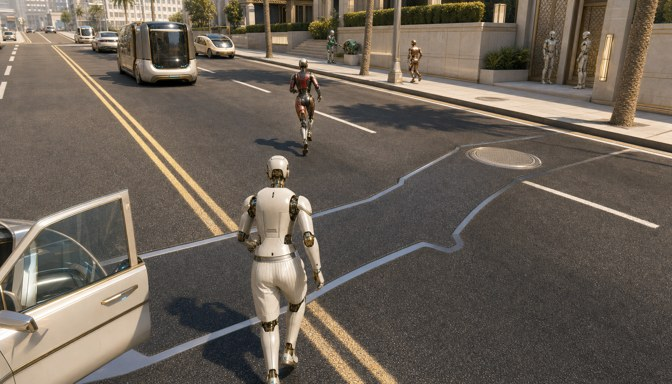
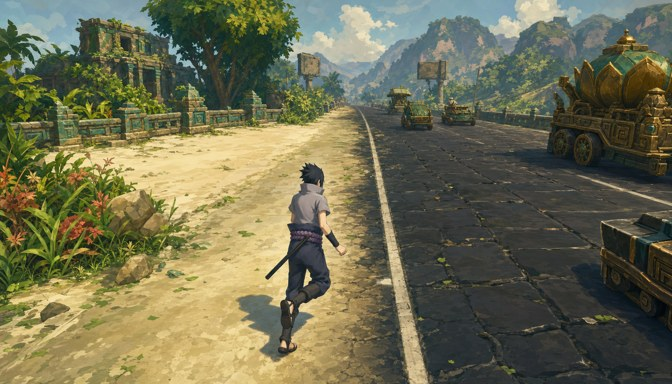
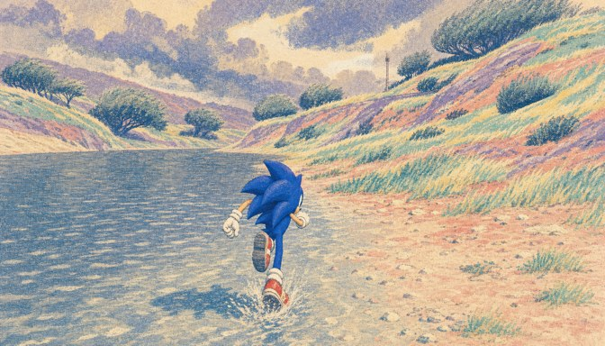
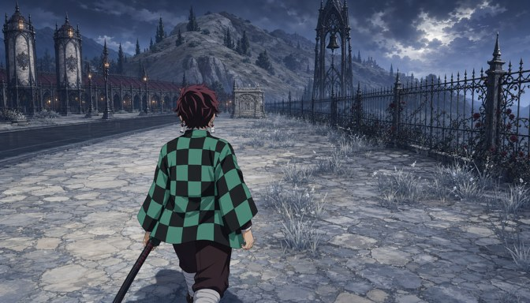
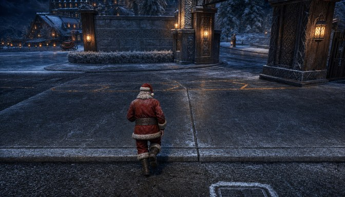
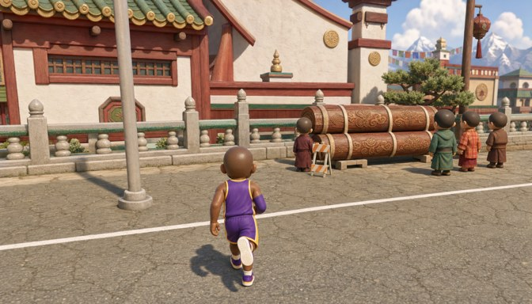

Does the LoRA read the proxy?
Six scenes. Each starts from a released first frame (for its style) and everything after frame 0 is ours: the geometry, the actions, the camera, and the caption compiled from the same simulation. MiniMax-H3 then generates each scene twice with the same anchor, proxy video, caption and seed — once in its native reference mode, once with the CWM LoRA. The only variable is whether the model was taught to read depth and semantics.
Board and drive off
He walks up the boulevard; a shuttle comes down it, halts beside him; he climbs in; it pulls away with him inside. Anchor: released example 40.

A wagon passes, the camera eases back
He runs up the shoulder; a wagon comes down the causeway on his right and passes; the boom lengthens from 3.75 to 6.5 m as it does. Anchor: example 19.

Turn away from the river
He runs along the water's edge, then breaks right; the follow rig swings round behind him and the river leaves the frame. Anchor: example 4.

Stop, and the camera orbits
He walks to the reliquary, stands for two seconds while the camera swings 40° round him, then walks on. Anchor: example 30.

Two leaps
He runs across the apron and leaps the curb twice; the caption carries the leaps because the JUMP state is read from the simulation. Anchor: example 25.

Stop, push in, pull back
He runs up the road, stops at the drums while the camera pushes in from 4 m to 2.2 m, then runs on as it drops back. Anchor: example 13.

Made with examples/gallery.py and docs/mkgallery.py. Videos re-encoded for the web at 672 px; the conditions themselves are 336×192 float32 depth + uint8 semantic ids.